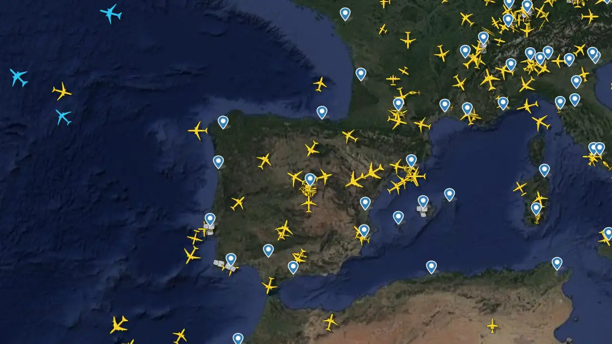

Módulo 01
Módulo 01
Gestión de Vuelos
Monitoreo en tiempo real de salidas, llegadas, asignación de puertas de embarque y tiempos estimados de aterrizaje (ETA).
Acceder al Módulo ->
Gestiona el tráfico aéreo, consulta información en tiempo real y controla las operaciones desde nuestra plataforma web.
Plataforma centralizada de supervisión operativa: monitorización del espacio aéreo, coordinación de pistas y gestión de incidencias en tiempo real.
Módulo 01
Monitoreo en tiempo real de salidas, llegadas, asignación de puertas de embarque y tiempos estimados de aterrizaje (ETA).
Acceder al Módulo -> Módulo 02
Módulo 02
Registro y seguimiento técnico de mantenimientos en pista, balizamiento, trabajos en la calle de rodaje y alertas de seguridad.
Acceder al Módulo -> Módulo 03
Módulo 03
Condiciones climáticas en el área de maniobras, velocidad del viento cruzado, visibilidad y reportes meteorológicos METAR/TAF.
Acceder al Módulo ->Esta plataforma integra las señales de los transceptores VHF y estaciones de radar del aeropuerto. Permite a los operadores mantener la separación de seguridad entre aeronaves, coordinar las secuencias de aproximación y optimizar el flujo de tráfico tanto en el aire como en la superficie.

Todas las operaciones registradas en esta plataforma cumplen con las regulaciones internacionales de aviación civil. Recuerde verificar las condiciones meteorológicas antes de validar asignaciones de pista.
Canal prioritario habilitado para torres de control y personal de rampa. Ante cualquier discrepancia en el estado de vuelos, contacte con el Centro de Control de Área (ACC).